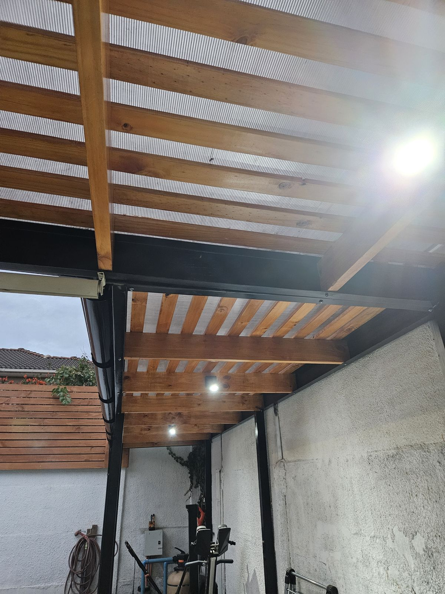
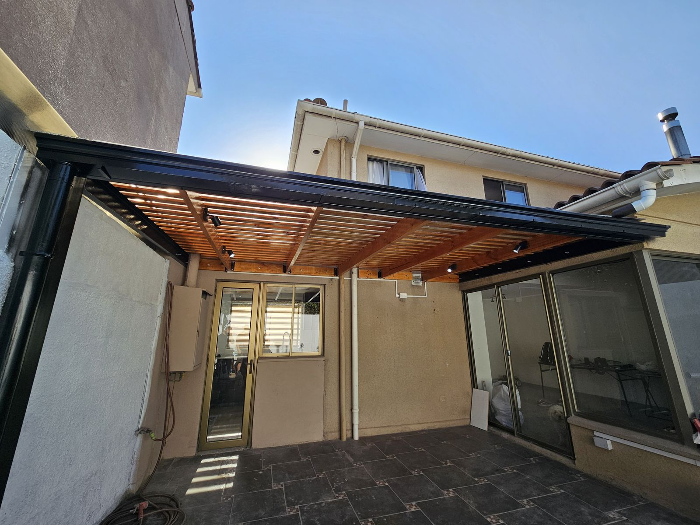
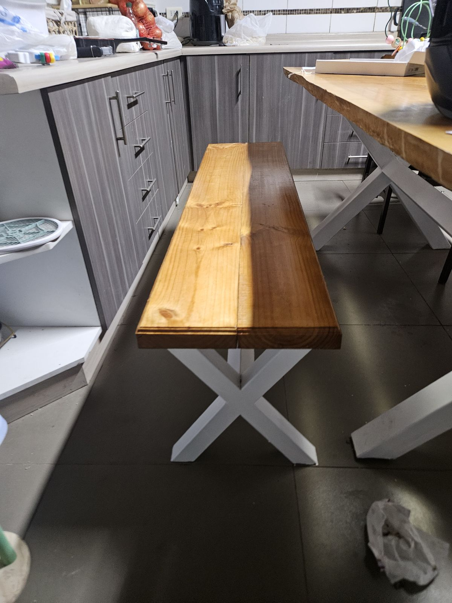

Inicio · Pérgolas y cobertizos
Pérgolas y cobertizos
Pérgolas y cobertizos metálicos
Estructuras a medida para terrazas, patios y estacionamientos, en acero con madera o policarbonato.
Una pérgola o un cobertizo bien diseñado amplía el uso del patio o protege el auto del sol y la lluvia. Partimos por el uso que le darás, el espacio disponible y cómo se conecta con la casa.
La estructura es metálica, para que dure, y el techo puede ser de madera, policarbonato u otra terminación. Podemos dejarla con iluminación incorporada.
Fabricamos a medida e instalamos, cuidando los anclajes, la evacuación del agua y la terminación anticorrosiva.
- Pérgolas para terrazas y patios
- Cobertizos para estacionamientos
- Estructura de acero
- Techo de madera o policarbonato
- Iluminación incorporada
- Fabricación e instalación a medida


Preguntas frecuentes
Lo que más nos preguntan
¿Qué techo puede llevar la pérgola?
Madera, policarbonato u otra terminación según el uso: más sombra, más luz o protección de la lluvia.
¿Hacen cobertizos para autos?
Sí, cobertizos metálicos para estacionamientos, diseñados según el espacio y la cantidad de vehículos.
¿Incluyen iluminación?
Podemos dejar la estructura con iluminación incorporada. Lo definimos en el diseño.
¿En qué comunas trabajan?
Trabajamos en Santiago y la Región Metropolitana.
¿Cómo pido una cotización?
Escríbenos por WhatsApp con fotos del lugar y medidas aproximadas. Coordinamos una visita y te enviamos la cotización.
Contacto
Conversemos tu proyecto
Atendemos en Santiago y la Región Metropolitana. Escríbenos y te respondemos a la brevedad.
Otros servicios